01_baseline
记录重叠位置的 alpha、T、weight 与 RGB。
Front-to-back original IDs: [0, 1, 2]
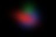
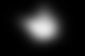


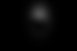
本机生成的十组手工屏幕空间实验，不是真实场景重建。深度交换仅改变排序标签；不声称真实三维移动。
RGB、alpha、residual 与 weight 使用固定 [0,1] 显示范围。浮点数据见各组 NPZ，0.5 采样偏移只加在像素网格。
这些小图未做逐图亮度归一化。Gaussian weight 图按原始 ID 命名；CSV 同时记录排序位置。
记录重叠位置的 alpha、T、weight 与 RGB。
Front-to-back original IDs: [0, 1, 2]



只交换前两个深度标签：RGB 与总 alpha 是否都改变？
Front-to-back original IDs: [1, 0, 2]
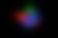

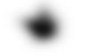
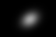
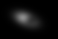

前景 opacity 降低后，后景权重怎样改变？
Front-to-back original IDs: [0, 1, 2]
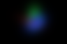
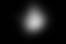
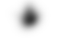
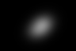
前景变强是否意味着整个画面都不透光？
Front-to-back original IDs: [0, 1, 2]
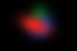
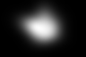
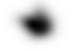
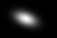
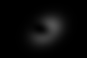
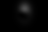
前景基础 opacity 为零时，还会挡住后景吗？
Front-to-back original IDs: [0, 1, 2]
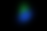
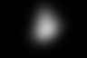
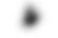


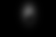
前景协方差乘4，中心alpha与受影响范围分别怎样变化？
Front-to-back original IDs: [0, 1, 2]
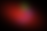
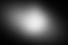
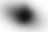
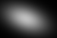
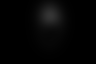
对比基线：白背景改变量是否等于剩余透射率？
Front-to-back original IDs: [0, 1, 2]
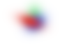


只换前景颜色，哪些 alpha/T/weight 应保持不变？
Front-to-back original IDs: [0, 1, 2]
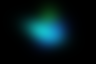


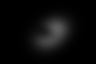

后景二维中心右移，重叠程度与遮挡影响怎样变化？
Front-to-back original IDs: [0, 1, 2]
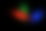
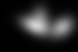
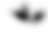

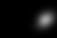
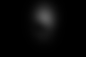
全部 opacity 为零，输出是否只剩背景？
Front-to-back original IDs: [0, 1, 2]